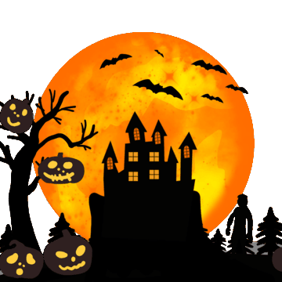

Uma curiosidade interessante sobre o Halloween é que a tradição moderna de usar fantasias e sair pelas casas pedindo doces remonta às antigas crenças celtas.Acreditava-se que no Dia das Bruxas, os espíritos dos mortos voltavam à Terra para possuir corpos vivos.Para evitar serem possuídos, as pessoas se disfarçavam com roupas assustadoras para confundir os espíritos e se misturar a eles.Essa tradição evoluiu ao longo do tempo para o que conhecemos hoje como "trick-or-treat" (doce ou travessura).

Origem do Soulcake
Acredita-se que essa tradição tenha origem na Idade Média, quando era comum fazer oferendas aos espíritos dos mortos durante o Dia das Bruxas.Os soulcakes eram pequenos bolinhos de massa doce, geralmente feitos com ingredientes como farinha, açúcar, manteiga, especiarias e frutas secas.Eles eram decorados com cruzes cortadas na superfície e eram distribuídos para as pessoas que visitavam as casas no Dia das Bruxas.A ideia era que esses bolinhos servissem como uma forma de oração e proteção para as almas dos mortos.>As pessoas que recebiam os soulcakes costumavam fazer uma pequena oração pelas almas dos falecidos em troca dos bolinhos.Essa tradição evoluiu ao longo do tempo para o costume moderno do "trick-or-treat" (doce ou travessura), onde crianças vestidas com fantasias vão de porta em porta pedindo doces.Hoje em dia, os soulcakes ainda são feitos e consumidos em algumas regiões, principalmente durante o Halloween, como uma lembrança das tradições antigas.